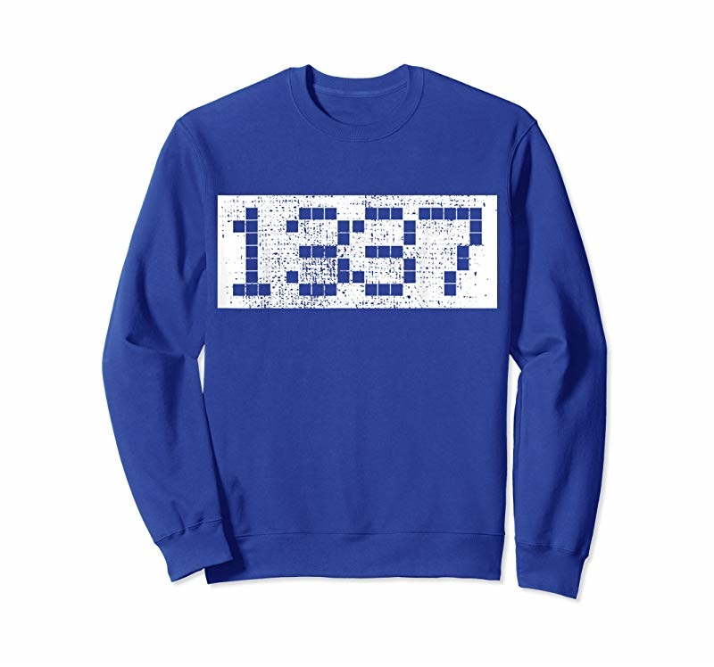

0x0. Resercher x90c?
-------------------------------------------------------------------------------------------------------------------------------
Hello came back my time! I'm a hacker, and in other words vulnerability researcher
I have exprienced hacking from 1998~now If do count, Its been about 20 more years
Yeah. But I'm not good at hacking than other my 1337 dudes they online. :~/
0x2. Archived CVE tracks
-------------------------------------------------------------------------------------------------------------------------------
* 2013-08-22 Samba 3.5.22/3.6.17/4.0.8 - nttrans Reply Integer Overflow DoS Linux
* 2010-08-03 Avast! Internet Security 5.0 - 'aswFW.sys' Kernel Driver IOCTL Memory Pool Corruption DoS
* 2010-04-04 EasyFTP Server 1.7.0.2 - 'MKD' (Authenticated) Remote Buffer Overflow Remote Windows
* 2004-12-15 Ricoh Aficio 450/455 PCL 5e Printer - ICMP Denial of Service DoS Hardware
Sorry to 1337 hackers about to less discovered
no CVE tracks:
2003 - korean best chatting portal site sayclub.com three vulnerability reported
0x3. Interesting?
-------------------------------------------------------------------------------------------------------------------------------
I like the discovery bugs in source code :-) or binaries. Many time mis point out advisories are released on the online FD
(Full Disclosure Mailing List). and I apologized to him fydor(nmap developer hacker). And He allowed to post my mail
to the web again. Thanks to Fyodor!
I like to dig attack technique research also. I have three time exprienced to make a new system hacking technique
No many But you perhaps known to me. 'You can be more than now to that exprienced to grow up!! on going!! then
dude' thanks
0x4. 1337 Hacker Dude?
-------------------------------------------------------------------------------------------------------------------------------
Phillip Petterson(a.k.a Rebel) (OverTheWire +op)
And I don't hate any korean 1337 hackers. they are now famous in television show and news headline
But For Me, I'm not that good. But Always*, I gave many efforts to learn hacking and bug hunting. thanks!
Hacking Need, More smart and many time dinging! don't forget it! dudes
0x5. Contact E-mail
-------------------------------------------------------------------------------------------------------------------------------
x90cx90c1[at]gmail.com
If you want to learn from me, Just feel free to send a mail to my mailbox! don't forget kind words onto the mail
EOF